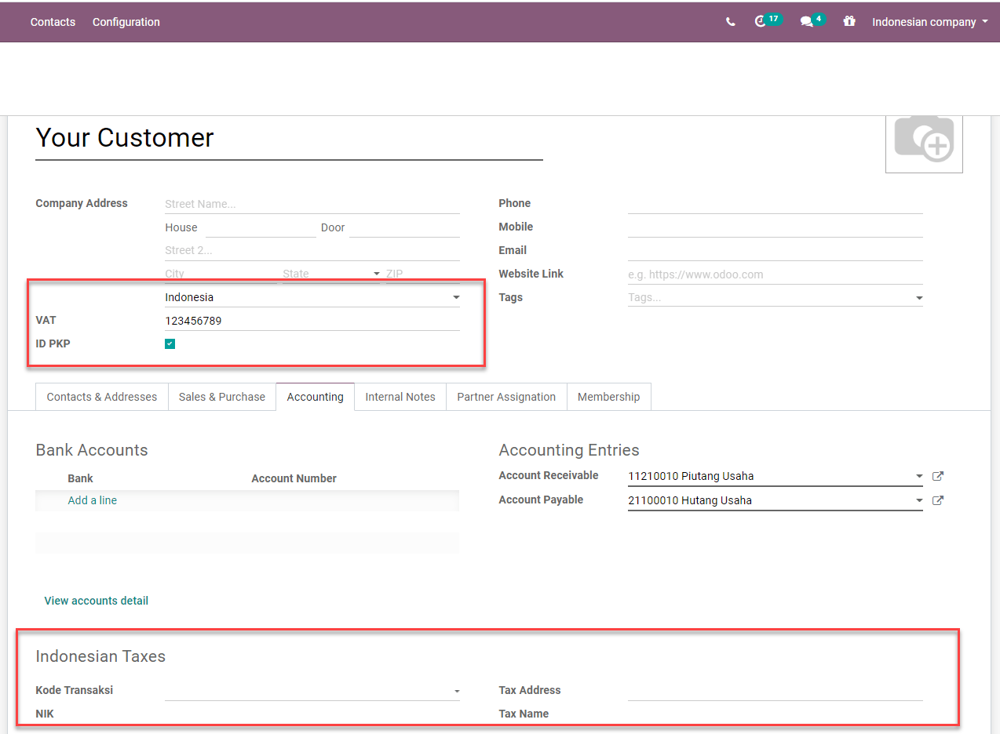

Indonesia¶
Módulo de E-Faktur¶
El módulo de E-Faktur se instala de forma automática junto con el módulo de la localización de Indonesia. Esto le permitirá crear un archivo CSV para una factura impositiva o para un lote de facturas impositivas que habrá que subir a la aplicación Tax Office e-Faktur.
Ajustes de NPWP y NIK¶
- Su empresaEsta información se usa en la línea de FAPR dentro del formato del efecto de archivo. Necesita configurar un número de RFC en el partner relacionado a su empresa de Odoo. Si no lo hace, no será posible crear un e-Faktur desde una factura.
- Sus clientesNecesita configurar la casilla ID PKP para generar e-fakturs para un cliente. Puede usar el campo de NIF en el contacto del cliente para configurar el NPWP requerido para generar el archivo de e-Faktur. Si su cliente no tiene un NPWP, solo escriba el NIK en el mismo campo del NIF.
Uso¶
Generar un número de serie para una factura impositiva¶
Vaya a . Para poder exportar facturas del cliente como e-Faktur para el gobierno indonesio, aquí debe ingresar los rangos de números que el gobierno le asignó. Al validar una factura, se le asignará un número de acuerdo con esos rangos. Después, puede filtrar las facturas que aún se deben exportar a la lista de facturas si hace clic en acción y luego en descargar e-Faktur.
Después de recibir nuevos números de serie de parte del Indonesian Tax Revenue Department (Departamento de Recaudación de Impuestos de Indonesia) puede crear un conjunto de números de serie para las facturas impositivas en la vista de lista. Solo debe especificar el mínimo y máximo de cada grupo de números de serie y Odoo le proporcionará un formato de 13 dígitos en automático, como lo solicita el Indonesian Tax Revenue Department.
Hay un contador que le hará saber cuántos números sin usar quedan en ese grupo.

Generar el archivo CSV de e-faktur desde una factura o un lote de facturas¶
Cree una factura desde . Si el país del cliente a facturar es Indonesia y si el cliente está configurado como ID PKP, Odoo le permitirá generar un e-Faktur.
Configure un Kode Transaksi para el e-Faktur. Hay un límite sobre los Kode Transaksi y el tipo de IVA que se aplica a las líneas de factura.

Odoo elegirá de forma automática el siguiente número de serie disponible de la tabla de números de e-Faktur (consulte la sección anterior) y generará el número de e-Faktur como concatenación del Kode Transaksi y del número de serie. Puede ver esto desde la vista de la plantilla de la factura en la página de Información adicional en la caja Impuesto electrónico.

Una vez que se publique la factura podrá generar y descargar el e-Faktur desde el símbolo Descargar e-Faktur del menú de acción. Se configurará la casilla de CSV creado.

Puede seleccionar varias facturas en la vista de lista y generar un lote de e-Faktur de tipo .csv.
Kode Transaksi FP (Código de transacción)¶
Los códigos disponibles al generar un e-Faktur son los siguientes: - 01 Kepada Pihak yang Bukan Pemungut PPN (Customer Biasa) - 02 Kepada Pemungut Bendaharawan (Dinas Kepemerintahan) - 03 Kepada Pemungut Selain Bendaharawan (BUMN) - 04 DPP Nilai Lain (PPN 1%) - 06 Penyerahan Lainnya (Turis Asing) - 07 Penyerahan yang PPN-nya Tidak Dipungut (Kawasan Ekonomi Khusus/ Batam) - 08 Penyerahan yang PPN-nya Dibebaskan (Impor Barang Tertentu) - 09 Penyerahan Aktiva (Pasal 16D UU PPN)
Corregir una factura que se publicó y se descargó: función para reemplazar la factura¶
Cancele la factura original errónea. Por ejemplo, cambiaremos Kode Transakski de 01 a 03 en la INV/2020/0001.
Cree una factura nueva y configure la factura cancelada en el campo de Reemplazar factura. En este campo solo podemos seleccionar facturas que tengan el estado de Cancelar del mismo cliente.
Al validar, Odoo utilizará automáticamente el mismo número de serie de e-Faktur de la factura cancelada y sustituida, pero cambiará el tercer dígito del número de serie original por 1 (tal y como se solicita para subir una factura de sustitución en la aplicación de e-Faktur).

Corregir una factura que se publicó pero no se ha descargado: restablecer e-Faktur¶
Restablezca la factura a borrador y cancélela.
Haga clic en el botón restablecer e-Faktur de la factura desde la vista del formulario.
El número de serie no estará asignado y podremos restablecer la factura a borrador, editarla y volver a asignarle un nuevo número de serie.